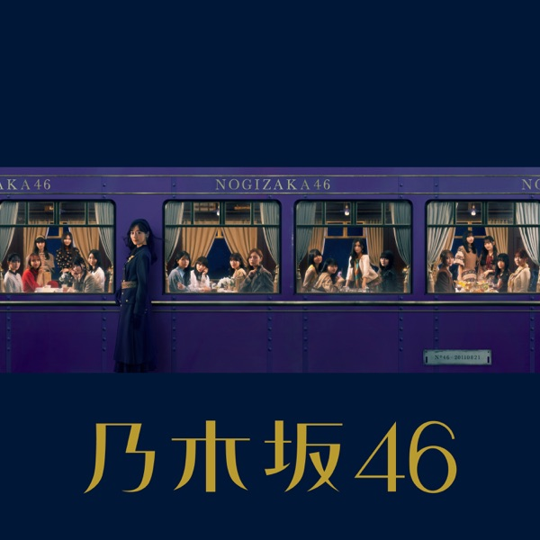

サカミチ
サカミチチャンスは平等ちゃんすはびょうどう

初収録リリース「チャンスは平等」のジャケット
フォーメーション
上が後列、下が前列です。色付きがセンター。（公式発表に基づく）
 吉田綾乃クリスティー
吉田綾乃クリスティー 佐藤楓
佐藤楓 阪口珠美
阪口珠美 一ノ瀬美空
一ノ瀬美空 五百城茉央
五百城茉央 池田瑛紗
池田瑛紗 伊藤理々杏
伊藤理々杏 向井葉月
向井葉月 中村麗乃
中村麗乃 田村真佑
田村真佑 井上和
井上和 遠藤さくら
遠藤さくら 賀喜遥香
賀喜遥香 川﨑桜
川﨑桜弓木奈於
与田祐希
久保史緒里
 山下美月
山下美月梅澤美波
 岩本蓮加
岩本蓮加参加メンバー（20名）
伊藤理々杏、岩本蓮加、梅澤美波、久保史緒里、阪口珠美、佐藤楓、中村麗乃、向井葉月、山下美月、吉田綾乃クリスティー、与田祐希、遠藤さくら、賀喜遥香、田村真佑、弓木奈於、五百城茉央、池田瑛紗、一ノ瀬美空、井上和、川﨑桜
この曲が披露されたライブ（11件）
同じリリースの曲
チャンスは平等、車道側、「じゃあね」が切ない、あと7曲、ぶんぶくちゃがま、サルビアの花を覚えているかい？、夏桜